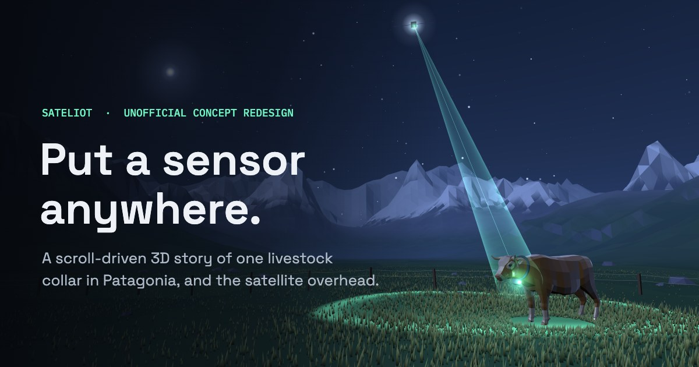
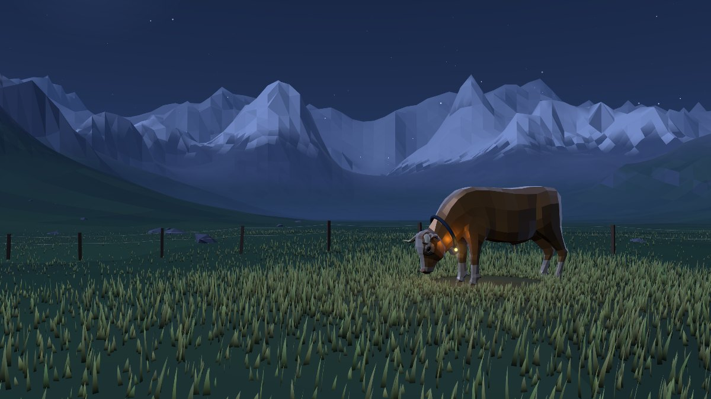
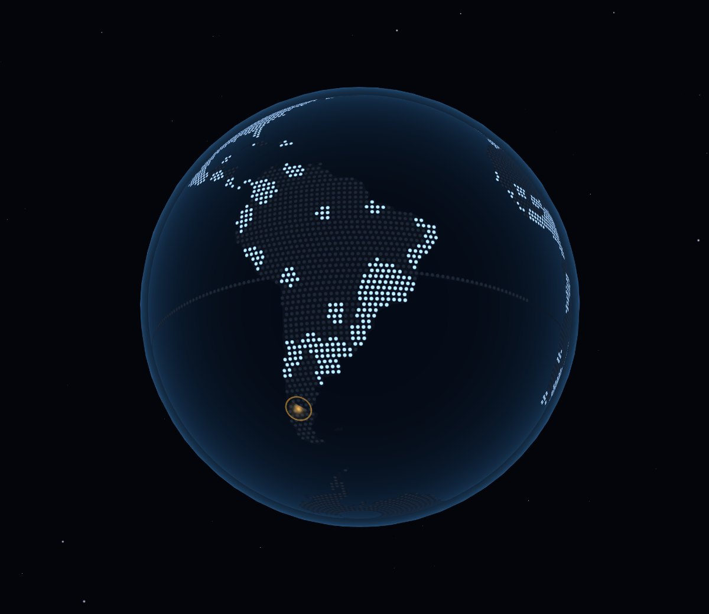
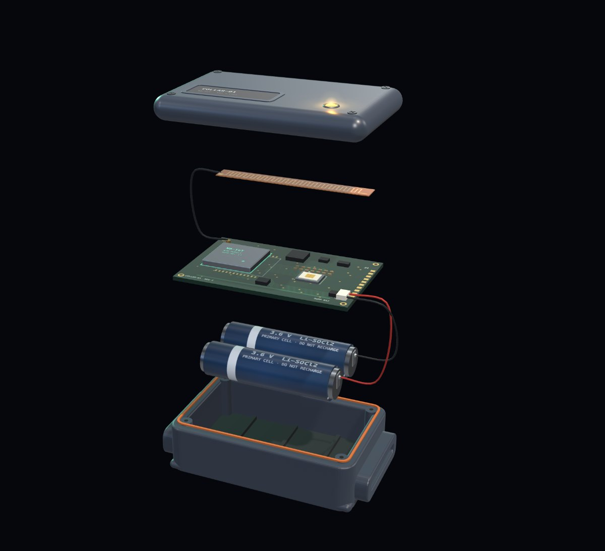
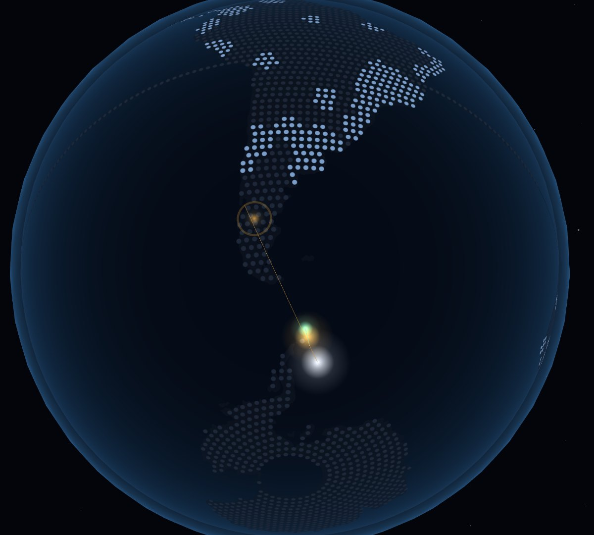
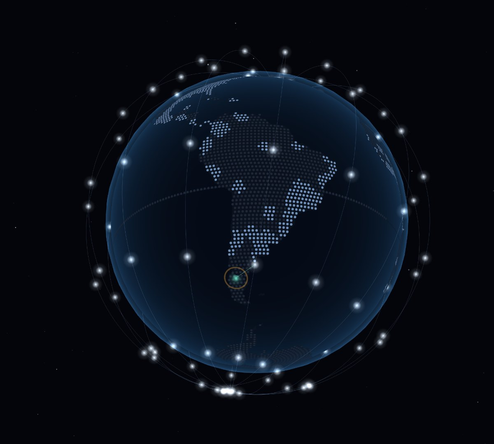

Case study · Unofficial concept redesign
One collar, one valley, one satellite pass.
A concept redesign of Sateliot's website for the people who actually buy satellite IoT: product managers and engineers. Instead of a feature list, the site follows a single livestock collar in Patagonia from “no signal” to “message delivered”.
- Role
- Concept, UX, visual and motion design, front-end
- Audience
- IoT product managers and engineers
- Stack
- three.js, Vite, vanilla JS, custom GLSL
- Status
- Personal concept, not affiliated with Sateliot

The problem
Satellite IoT is easy to over-promise and hard to picture.
Direct-to-device satellite IoT has three ideas a buyer has to grasp before anything else makes sense: where coverage ends, why no special hardware is needed, and why delivery isn't instant. Typical sites in this space lead with launches and specs and leave those three ideas for a sales call.
The brief was to make them obvious in one scroll, without a single claim the company couldn't stand behind, and to keep it fast on a mid-range phone.
The approach
Tell it through one device.
Every chapter is the same collar seen from a different distance. The amber status LED is the thread: it's the dot on the globe, the light on the circuit board and the light on the cow, and each scene change passes through it.

A light with nowhere to send its data
The hero opens close on the collar at night. The live telemetry panel reads “Cell network: none” before any copy explains why.

Coverage follows people, not places
The camera rises from the valley into a globe in one unbroken move. Scrolling paints cell coverage around towns and roads while the collar's valley, and the oceans, stay dark. The only statistic is one nobody can dispute: oceans cover about 71% of the planet.

No dish, no second radio
The globe dives into the amber dot, which becomes the LED on the device. The collar comes apart to show a standard NB-IoT modem and a standard SIM, the product's central promise, labelled part by part.

Honest about the wait
Scrolling moves a satellite over the ridge. Buffered readings travel up the beam one by one while the HUD counts them down. Then the satellite carries the message to a ground station, and the copy says plainly: not real-time yet.

Let engineers try it themselves
A slider grows the constellation from today's satellites to the roadmap, and a 24-hour strip shows the waits shrinking. A delivery-window estimator answers the first question an engineer asks. Both run on a small orbital model and are labelled illustrative wherever they appear.
Decisions that shaped it
Credibility over spectacle.
Every number in one file
Company facts live in a single config object, and every figure on the page reads from it. Model assumptions sit apart and are always labelled illustrative. The site never implies real-time delivery.
Transitions that explain
No cuts between scenes. The camera rises from the valley into orbit, dives into the collar's light, and pulls back out onto the cow, so the viewer always knows where they are.
Calm by default
Sound off by default, reduced-motion support that removes the autoplay and camera easing, full English and Spanish, keyboard-reachable controls, and a readable text fallback without WebGL.
Built for a mid-range phone
A compressed 230 KB cow model, fewer grass blades and no shadows on low-end devices, shaders warmed up during the loader, and an adaptive governor that lowers resolution if frame rate drops.
Under the hood
Small pieces, hand-built.
- Terrain: a polar-grid valley with ridged-multifractal peaks, slope-and-height shading, and distance fog, all in one custom shader.
- Grass: tens of thousands of instanced blades swaying in the wind and catching the LED's light.
- Globe: a dot-matrix shader driven by a land and coverage texture built at load time from open map data.
- Orbits: a simplified circular-orbit model computes passes, link windows and delivery estimates for the slider and calculator.
- Handoffs: scenes render offscreen and crossfade through a shared bloom, tied to scroll position so they reverse exactly.
See it move
Best experienced on the live site.
Scroll slowly. Sound is optional and off by default.
Open the live site →